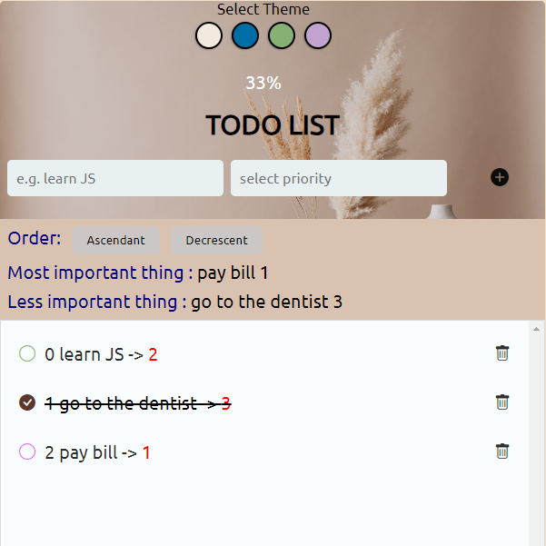
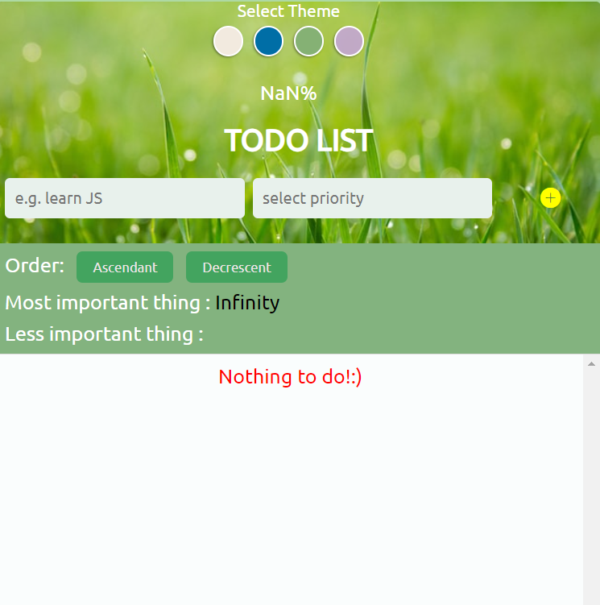

Task Manager
You can add, remove , select priority of todos,and personalise theme
- - Javascript ES6
- - HTML5 custom attributes
- - Bootstrap icons
- - CSS pseudoclasses
- - Array methods
GitHub


